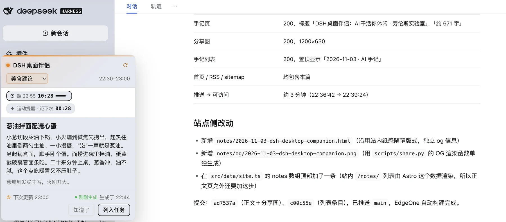

DSH桌面伴侣：AI干活你休闲
用 DSH 干活，总有一种时间：AI 在读文件、跑命令、等模型，几十秒到几分钟。切去别处会断思路，干等又觉得可惜。
能不能有一个方案，让自己不要像个傻子一样看 AI 在吐思维链？这就是我刚刚开发的 DSH桌面伴侣。
DSH 支持自定义插件，这是前提：插件是个普通小包，装上之后界面里多出一块位置，主程序一行都不用改。插件一半在后台，负责按规则生成或抓取内容、按钟点缓存；另一半在页面上把它画出来。内容每半小时一格，同一格只生成一次，等你的时候早就备好了。
它像一张电子贴纸：点“知道了”就缩成一张小纸条，随时可以展开，看你预先设定的栏目。栏目里的东西按规则即时生成或抓取，所以永远不会看腻。

适合放在这里的内容得轻，两三行读完；得按时间排班；得能随手丢掉。它还留了个出口：看完点“知道了”收起，觉得有用点“列入任务”，内容拼成一段提示，开个新会话就能接着做。
下午三点推一条三分钟肩颈拉伸，傍晚推一条快手家常菜做法，也可以随时查阅项目进度或者发布游戏的在线数据；有时只是一点小东西——跨领域的小实验、一条地道英文表达、一个推荐的小灵感。
最喜欢运动提醒这一块。每刻钟到点，浮窗里冒出一句“起来动一动”，带几个 CSS 小火花；后来又加上了全屏烟花，六连发、带重力拖尾，五秒多，从屏幕这头炸到那头，也不挡鼠标。到了晚上快睡觉时倒计时启动，最后一分钟开红灯警示快去睡觉，比闹钟温柔。
窗口的手感也调过：能拖到顺手的位置，关了再开还在原处；字号加了一档，因为它是用来“瞥”的。
等待是低负荷的时刻，人没把注意力全交出去，却又走不开，正好接住这种随时能中断的东西。它不催你，不猜你，看完点一下就干净。
后来再等 AI 干活，我不急着切窗口了，抬眼看看右上角：今天在说什么，晚饭有着落没有，烟花什么时候会炸。
这就是今天的一个收获，工作的时候顺便开发的小插件。